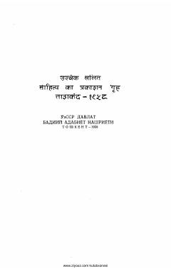

HYHind yozuvchilarining hayotiy va ta'sirchan hikoyalaridan iborat adabiy to'plam.
Ushbu to'plam hind adabiyotining taniqli vakillari, jumladan Prem Chand va Mulk Roj Onand kabi yozuvchilarning hikoyalarini o'z ichiga oladi. Asarlar hind xalqining hayoti, qashshoqlikka qarshi kurashi va insoniy fazilatlarni aks ettiruvchi realistik hikoyalardan iborat.